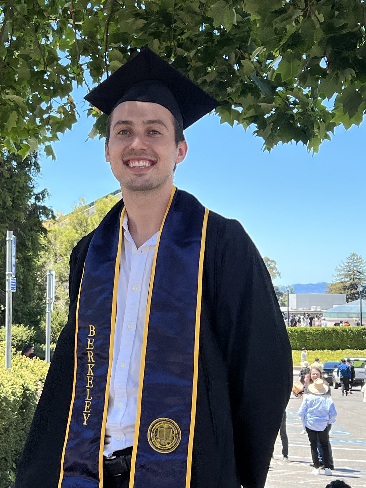

|
Matthew Bronars
I am a Graduate Student in the School of Interactive Computing at Georgia Tech where I am getting my Masters in Computer Science with a specialization in Machine Learning. I work in the Robotic Learning and Reasoning Lab (RL2) and my thesis advisor is Dr. Danfei Xu. I am most interested in understanding how to train safe and effective policies from large offline datasets. My current research focuses on Offline Reinforcement Learning and Robot Learning From Play.
I received BS in EECS and Mechanical Engineering from the University of California, Berkeley (2017-2021). At Berkeley I worked in the Sohn Microfluidics Laboratory under Dr. Lydia Sohn. My research involved training neural networks to segment and track stem cells in brightfield microscopy timelapses. I have also spent time as a Computer Vision Intern at Schlumberger where I worked with Suraj Kiran and Tianxiang Su.
Email /
Github /
Resume
|

|
|
Research Interests:
My goal is to improve the quality of and access to food, education, housing, and healthcare for all people in the world. I believe that introducing Robotics and Artificial Intelligence into our daily lives is the best way to accomplish this goal. My research focuses on finding ways to safely and efficiently trian these systems for real world deployment. Specifically I am exploring how to leverage large-scale, unstructed, offline datasets for policy generation. This involves experimenting with offline RL workflows and coming up with new generative methods for learning latent skills from unlabled demonstration datasets. These data driven approaches to RL have the potential to produce extremely benefitial decision making systems, even in high risk environments.
|
|
Course Work
Notable Courses:
- Machine Learning - UC Berkeley CS 189 (A)
- Artificial Intelligence - GaTech CS 6601 (A)
- Computational Data Analysis - GaTech CSE 6740 (A)
- Deep Learning - GaTech 7643 (Current)
- Human Robot Interaction - GaTech 7633 (Current)
|
|
Projects, Posters, and Publications:
|
|